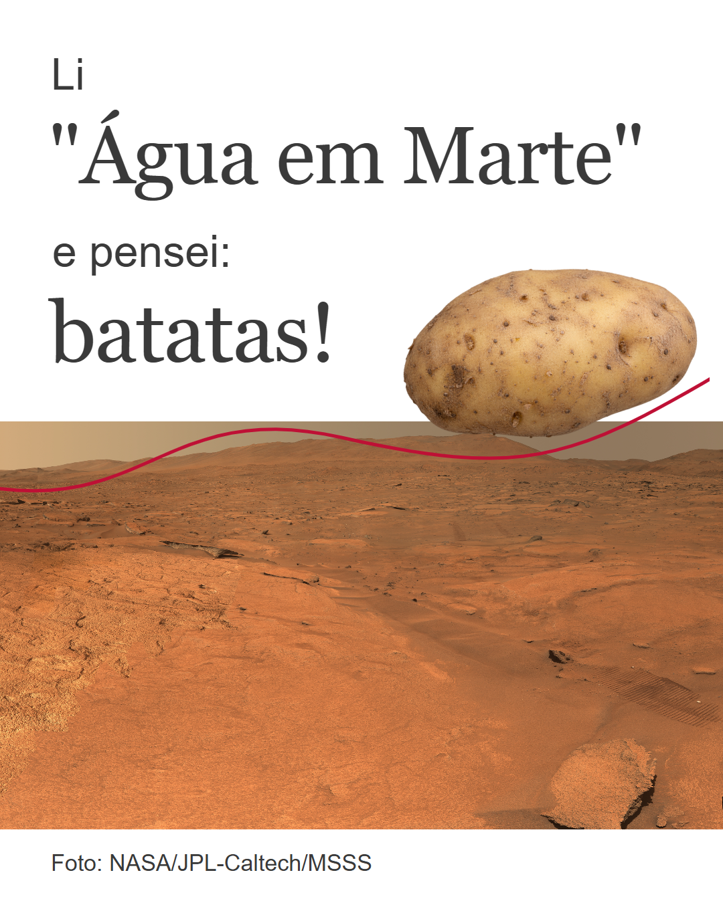
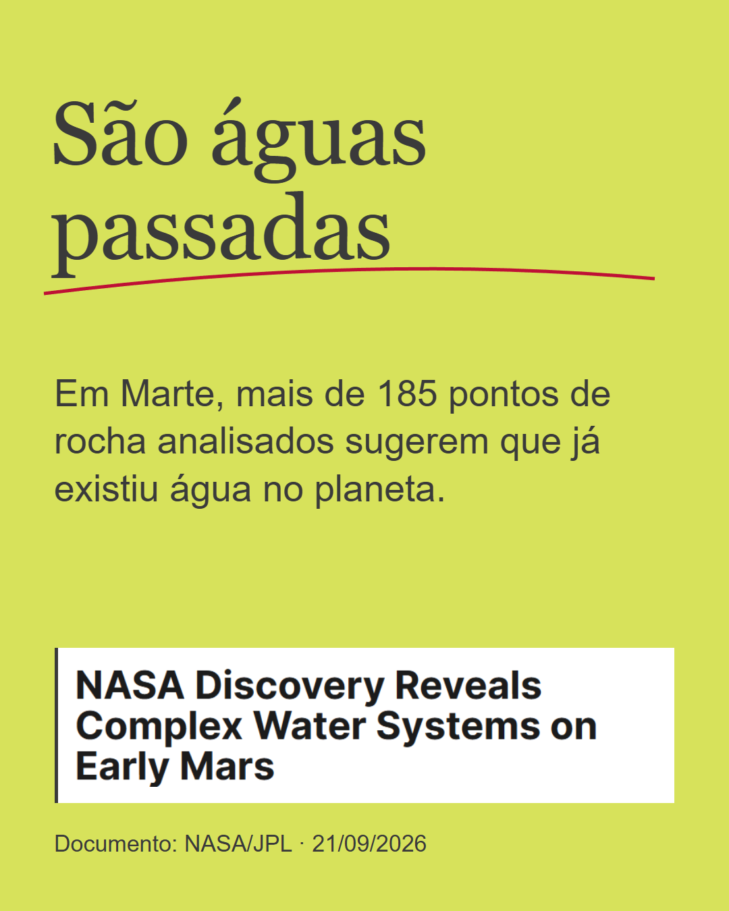
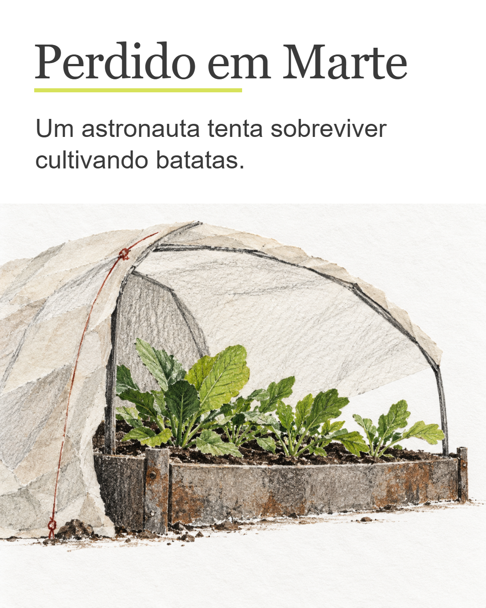
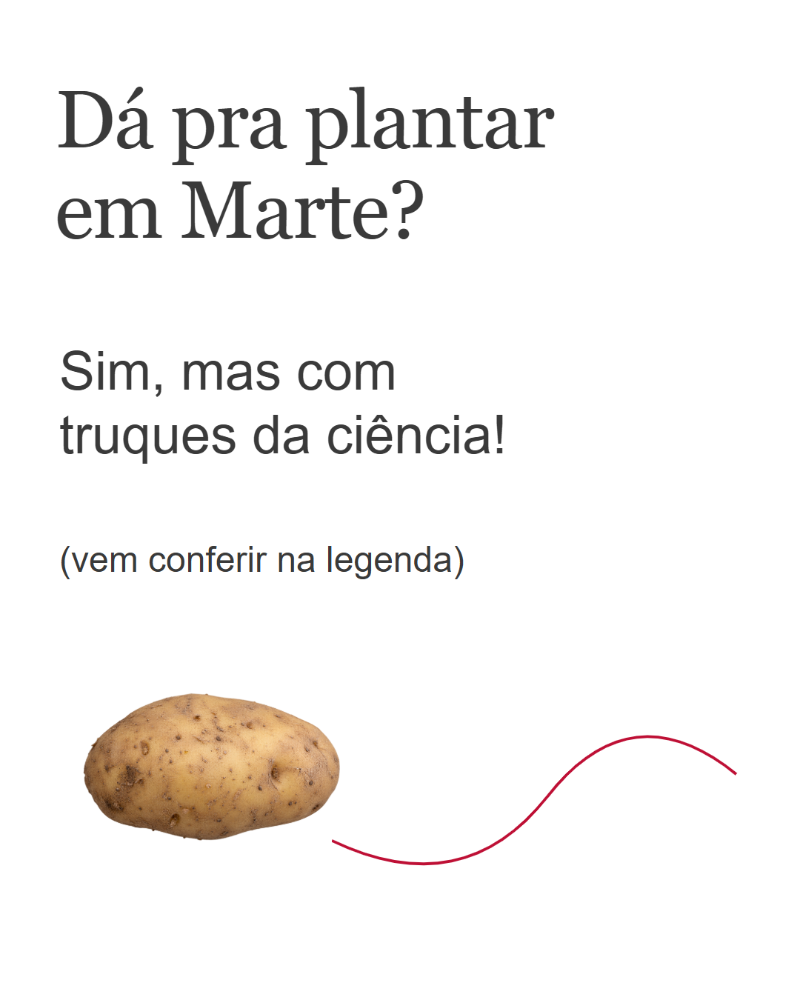
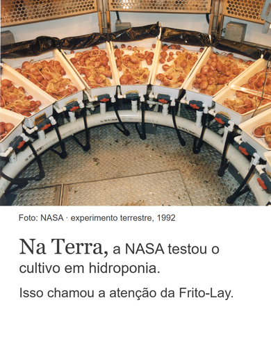

Marte, batatas e uma curiosidade
Cinco frames · 1080 × 1350 · copy escrita por Kell na revisão aprovada. Execução visual e legenda proposta aguardam o Publish Gate. Nada publicado ou agendado.
Ver conjunto · Baixar pacote · Alt text · Créditos e provenance · QA










Legenda proposta
Redação do assistente, pendente de aprovação. “Nossa amada ciência” é expressão fornecida por Kell.
Os “truques” da nossa amada ciência envolvem bastante engenharia: controlar pressão, temperatura e luz, proteger as plantas da radiação e fornecer água e nutrientes. A NASA descreve a possibilidade de cultivar em um ambiente protegido, usando hidroponia: cultivo sem solo. Também aponta desafios como os percloratos, compostos presentes no material da superfície de Marte que exigem cuidados. Os experimentos citados aconteceram na Terra. Isso não significa que batatas já tenham sido cultivadas em Marte. A foto é de um teste de 1992; o interesse da Frito-Lay veio dos estudos de hidroponia, com consultoria sobre batatas-semente. Já a notícia das rochas trata de água no passado. Ela não demonstra água disponível para uma plantação hoje. Fontes NASA: Água e rochas: https://www.nasa.gov/solar-system/planets/mars/nasa-discovery-reveals-complex-water-systems-on-early-mars/ Cultivo e Frito-Lay: https://www.nasa.gov/science-research/nasa-plant-researchers-explore-question-of-deep-space-food-crops/ Imagens: terreno de Jezero, NASA/JPL-Caltech/MSSS; experimento terrestre, NASA. O recorte da batata e a ilustração do abrigo foram gerados por IA para a composição editorial. Não são registros de cultivo em Marte nem imagens oficiais de Perdido em Marte.
Leitura no celular · 390 px
Simulação rasterizada no tamanho de um feed de celular. Não equivale a teste com leitores.
